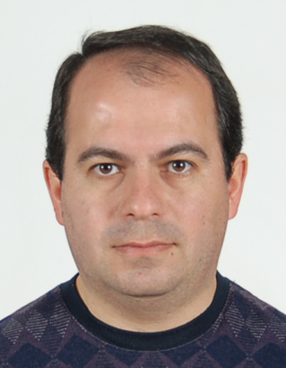

Dr. Aram Manaselyan
Associate professor
Department of Solid State Physics
Yerevan State University
Personal info
Born 5 December, 1979 in Gyumri, Armenia.
Married, has two children.
Home adress
10/6 Gitavan, Ashtarak, ArmeniaPhone: (37494) 00-99-86
E-mail: amanasel@yahoo.com
Office address
Department of Solid State Physics, Yerevan State University,1 Al. Manugian, Yerevan 0025, Armenia
Phone: (37460) 71-03-57
E-mail: amanasel@ysu.am
Education
- Ph.D. 2002 – 2005
Yerevan State University, Department of Solid State Physics
1 A. Manoogian, Yerevan, 0025, Armenia. - Master of Science in Physics 2000 – 2002
Yerevan State University, Department of Solid State Physics
1 A. Manoogian, Yerevan, 0025, Armenia. - Bachelor in Physics 1996 – 2000
Yerevan State University, Department of Solid State Physics
1 A. Manoogian, Yerevan, 0025, Armenia
Research Interests
Theoretical investigation of Semiconductor Nanostructures ( QWWs , QDs , QRs ).
- Spin Interactions in Magnetic Semiconductor Nanostructures
- Effect of spin-orbit interactions on Electron, Hole and Impurity States
- Optical properties of semiconductor nanostructures under influence of external electric and magnetic fields
- Properties of dielectrically non Uniform Semiconductor Nanostructures
Awards
Award of the President of Republic of Armenia in the area of Information Technologies, in “The Best PhD Student” nomination.
COMPUTER KNOWLEDGE
Computational skills with Mathematica, MatLab and Origin, Programming skills in C++.
Freely working in Windows and Unix/Linux environments.
TEACHING EXPERIENCE
2017- present: Associate professor
Department of Solid State Physics, Yerevan State University,
1 A. Manoogian, Yerevan, 0025, Armenia.
Courses
- Physics of low dimensional systems
- Fundamentals of spintronics
- Physics of atoms
2011-2017: Assistant professor
Department of Solid State Physics, Yerevan State University,
1 A. Manoogian, Yerevan, 0025, Armenia.
Courses
- Fundamentals of spintronics
- Physics of atoms
- Physics of new materials
WORK EXPERIENCE
2010-present: Researcher
Yerevan State University, Department of Solid State Physics
1 A. Manoogian, Yerevan, 0025, Armenia
2008-2010: Postdoctoral fellow
Department of Physics and Astronomy, University of Manitoba,
223 Alen Building, Winnipeg MB Canada R3T 2N2
Advisor Prof. Tapash Chakraborty
Email: tapash@physics.umanitoba.ca
2002-2008: Researcher
Yerevan State University, Department of Solid State Physics
1 A. Manoogian, Yerevan, 0025, Armenia
SCIENTIFIC PUBLICATIONS
- T. Chakraborty, A. Manaselyan, M. Barseghyan, Interaction-driven distinctive electronic states of artificial atoms at the ZnO interface. J. Phys.: Condens. Matter 29 (2017) 215301 (5pp).
- A. Manaselyan, Unique properties of ZnO quantum rings. Proceedings of Yerevan State University 51 (2017) 117-120.
- V. Mughnetsyan, A. Manaselyan, A. Kirakosyan, Effect of Rashba spin-orbit coupling and external magnetic field on electronic minibands in highly strained one-layer quantum ring superlattice. Superlattices and Microstructures 104 (2017) 10-18.
- T. Chakraborty, A. Manaselyan, M. Barseghyan, Irregular Aharonov–Bohm effect for interacting electrons in a ZnO quantum ring. J. Phys.: Condens. Matter 29 (2017) 075605 (5pp).
- A. Ghazaryan, A. Manaselyan, T. Chakraborty, Signatures of Majorana fermions in an elliptical quantum ring. Phys. Rev. B 93, 245108 (2016).
- M. Barseghyan, A. Manaselyan, D. Laroze, A. Kirakosyan, Impurity-modulated Aharonov–Bohm oscillations and intraband optical absorption in quantum dot–ring nanostructures. Physica E 81, 31-36 (2016).